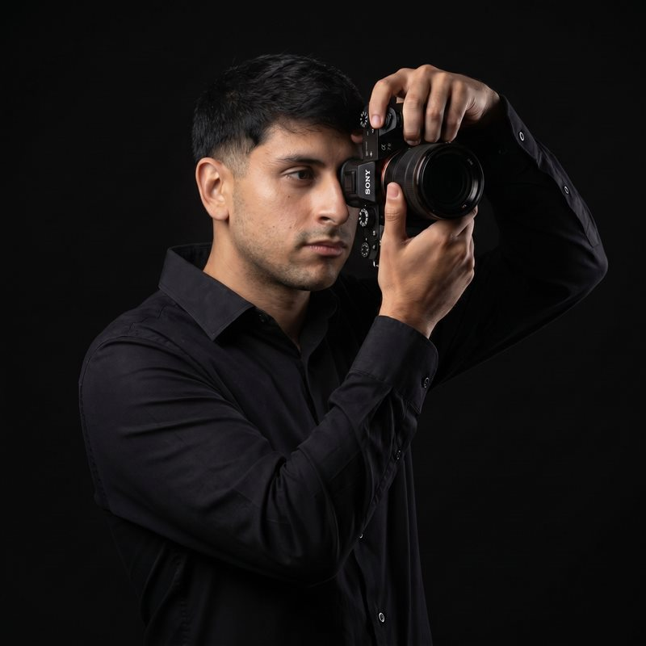

Edición
Edición profesional pensada para redes: ritmo, color y narrativa visual que comunican calidad y generan alcance.
Ayudo a marcas, profesionales y negocios a mejorar su presencia digital y crecer en redes, sin perder tiempo en el proceso creativo.

Sobre mí
Editor de video · Filmmaker · Content Specialist
Soy Valentino Sona, editor de video y especialista en contenido digital. Llevo más de 3 años ayudando a marcas, profesionales y negocios a fortalecer su presencia en redes, combinando edición profesional con una estrategia de contenido pensada para ahorrarles tiempo y generar resultados sostenidos.
¿Tenés un proyecto? Contactame por WhatsApp o Instagram y empecemos.
Proyectos editados
Marcas
Años de experiencia
Portfolio
Proyectos de edición y contenido desarrollados para marcas y negocios de distintos rubros. Hacé clic en cualquier video para reproducirlo.
Lo que hago
Edición profesional pensada para redes: ritmo, color y narrativa visual que comunican calidad y generan alcance.
Planificación y dirección creativa para que tu marca tenga presencia constante en redes, sin que el proceso te quite tiempo.
Propuestas de contenido basadas en tendencias y en lo que mejor funciona en tu rubro, para que nunca falten formatos por explorar.
Cómo trabajo
Analizamos tu marca, tu audiencia y tus objetivos para definir una línea de contenido clara.
Edición profesional del material, cuidando ritmo, color y sonido según el formato y la plataforma.
Compartimos un primer corte y ajustamos los detalles junto a vos.
Recibís el contenido final, listo para publicar en el formato que necesites.
Preguntas frecuentes
Depende de la complejidad: un reel simple puede estar en 2-3 días, una campaña completa puede llevar 1-2 semanas. Te doy un tiempo estimado al cotizar.
Sí, cada proyecto incluye rondas de ajustes para que el resultado final cumpla con lo que necesitás.
No, también trabajo con quienes están empezando: si todavía no grabaste nada, me encargo de armar la planificación y las ideas de contenido para que arranques con una base sólida.
Sí, además de la edición te ayudo a definir qué tipo de contenido publicar y con qué frecuencia, según tus objetivos.
Cada proyecto es distinto, así que cotizo según el alcance: cantidad de videos, duración y complejidad. Escribime contándome tu idea y te paso un presupuesto.
Sí, también puedo encargarme de la grabación. Estoy en Argentina, así que la disponibilidad para filmar depende de tu ubicación — conversémoslo según dónde te encuentres.
También hago esto
La edición de video no es lo único que hago. Si te interesa ver mis trabajos de fotografía, los tengo reunidos en mi portafolio de Adobe.
Ver portafolio de fotografía